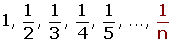
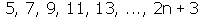
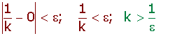
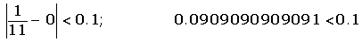
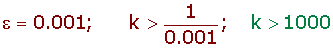

Limit of a Sequence
Definition of the Limit of a Sequence
The limit of a sequence is the number which the terms of a sequence are approaching.

a1= 1.
a2= 0.5.
a1000= 0.001.
a1000 000 = 0.000001.
The limit is 0.

a1= 0.5
a2= 0.6666....
a1000= 0.999000999001
a1000 000 = 0.999999000001
The limit is 1.

a1= 5
a2= 7
a1000= 2,003
a1000 000 = 2,000,003
No particular number can represent the limit of this sequence, therefore, the limit is ∞.
Finite Limit of a Sequence
A squence, an, has a limit, L, if and only if for any positive number, ε, there is a term, ak, from which all terms of an greater than ak fulfill that |an−L| < ε.

The limit of the sequence an = 1/n is 0.

It can be determined from that term of the sequence that the distance from 0 is less than a positive number (ε).

From a11, the distance to 0 is less than 0.1.

Determine from that term if the distance to 0 is less than 0.001.


From a1001, the distance to 0 is less than 0.001.
Infinite Limit of a Sequence
A sequence, an, has a limit of +∞ when for M > 0 there is a term, ak, from which all the terms of an greater than ak fulfill that an> M.

The limit of the sequence an = n2 is +∞.
1, 4, 9, 16, 25, 36, 49, ...

If M = 10,000, its square root is 100, therefore, for a101 it will exceed 10,000.
a101= 1012 = 10,201
A sequence, an, has a limit of −∞ when for N > 0 there is a term, ak, from which all the terms of an greater than akfulfill that an < −N.

Verify that the limit of the sequence an = −n2 is −∞.
−1, −4, −9, −16, −25, −36, −49, ...

If N = 10,000, its square root is 100, therefore, for a101 it will exceed −10,000.
a101= −1012 = −10,201